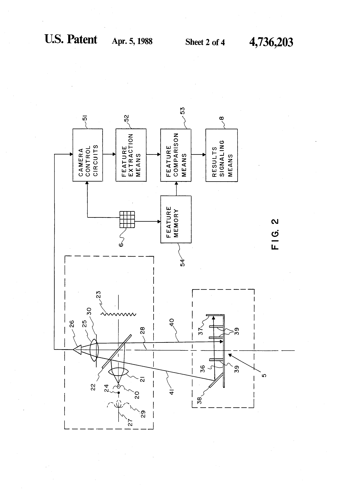
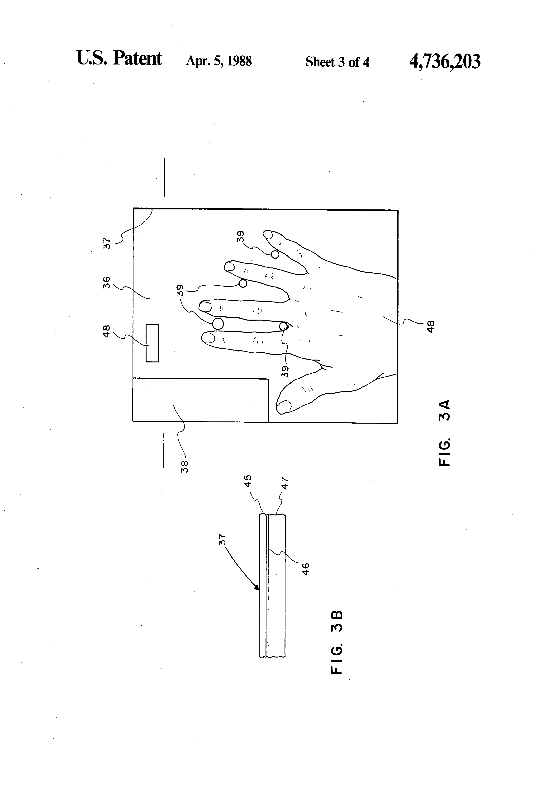

ID-3D Hand Geometry Verifier
The machine that reads your whole hand as a password

Overview
The ID-3D Hand Geometry Identity Verifier, shipped by Recognition Systems Inc. of San Jose beginning in 1986, is a machine that reads a human hand the way a barcode scanner reads a label — except the label is your body. To use it, you enter a claimed identity on a twelve-button keypad, then place your hand on a platen whose instructions are printed right on the device: slide the hand forward until it bumps against the web pegs, press flat against the surface, close fingers against the pins, hold until the lamp goes out. The platen is faced with retro-reflective sheeting — the same microscopic-glass-bead material used on road signs — so a light source aimed coaxially at the platen bounces straight back to the camera, making the platen glow 1,600 times brighter than white paper. Anything on it, including your hand, appears as a black silhouette.
The clever part is dimensional. A 45-degree mirror mounted beside the platen gives the single digitizing camera a second, perpendicular view: a side profile of the hand as well as its plan view. From the two views the machine extracts roughly ninety measurements — finger lengths and widths, hand thickness, area, perimeter, and ratios among them — and compresses them into a small template compared against stored identities. A lamp or door lock reports the verdict. A 1987 Naval Postgraduate School thesis studying the device measured an equal-error rate around 0.5-0.6%.
Under the hood sits one of the era's most delightfully improvised components: the camera's image sensor is a Micron IS-32 'Optic RAM' — a dynamic RAM chip with a clear window, used as an imaging array. Photons hitting the exposed storage capacitors charge them like film; when refresh is suspended for an 'exposure,' the memory bit pattern literally becomes the picture. The ID-3D line evolved into the HandKey, which found its way into nuclear plants, Disney World season-pass turnstiles, and the athletes' village of the 1996 Atlanta Olympics.
Deep dive
The ID-3D is built on an explicit inversion: access control systems of the era depended on keys, cards, and PINs — transferable objects anyone can lose, steal, or pass along. The patent frames the alternative: biometric characteristics unique to a person, compared directly against stored data. The keypad claims an identity; the hand proves it. There is nothing to carry, nothing to remember — only a body part placed exactly where the printed instructions say.
The platen's retro-reflective sheeting reflects light straight back toward its source, making the platen appear 1,600 times brighter than a white surface. A hand on the platen blocks the return light and reads as a black shape against a blazing background — a high-contrast shadow image ideal for precise dimensional measurement. The machine sees people the way a road sign sees headlights.
The imaging array is a Micron IS-32 'Optic RAM': a dynamic RAM chip in a clear-window package. Refresh is suspended for an exposure interval, photons charge the cells proportionally to brightness, and when refresh resumes the memory bit pattern is a readout of the picture. The same improvisation — DRAM as a light sensor — appears in the museum's era in the Cromemco Cyclops; the ID-3D used it for identity.
The patent is explicit about the arms race in spoofing: simple two-dimensional hand readers could be defeated by a cardboard tracing of an authorized user's hand. The ID-3D's answer is the side view — a second silhouette perpendicular to the plan view, delivered by a 45-degree mirror inside the platen. A fake now has to be correct in three dimensions. Trust nothing that can be flat.
The machine does not ask the user to learn anything abstract. Its operating instructions are printed on the platen surface itself: slide, press, close, hold. The body is aligned by physical contact with the device — pegs, pins, and a flat surface — so the user's geometry is presented consistently to the camera every time. Identity verification as a small, repeatable physical ceremony.
Team & pioneers
- David P. Sidlauskas. Inventor of the ID-3D; sole named inventor on US Patent 4,736,203 (filed 17 July 1985, granted 5 April 1988); founded and led Recognition Systems Inc.
- Recognition Systems, Inc. San Jose company that built and shipped the ID-3D and its HandKey successors; later became part of Ingersoll Rand's Schlage division.
Media


Sources
- US Patent 4,736,203 '3D hand profile identification apparatus' (Sidlauskas, filed 1985, granted 1988)
- Bright, 'Examining the reliability of a hand geometry identity verification device for use in access control,' Naval Postgraduate School master's thesis (1987)
- Wikipedia — Hand geometry
- Biometric Update — 'Explainer: hand geometry recognition' (2012)